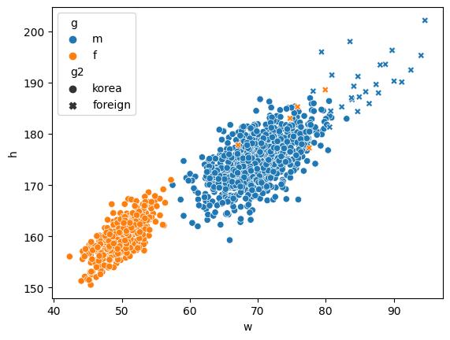

Lesson 13: 간단한 시각화 vs 고차원 시각화

강의영상
imports
간단한 시각화: matplotlib
line plot
기본플랏
- 예시1
모양변경
- 예시1
- 예시2
- 예시3
색상변경
- 예시1
- 예시2
모양 + 색상변경
- 예시1
- 예시2: 순서변경 가능
원리? (\(\star\))
- r--등의 옵션은 Markers + Line Styles + Colors 의 조합으로 표현가능
ref: https://matplotlib.org/stable/api/_as_gen/matplotlib.pyplot.plot.html
--r: 점선(dashed)스타일 + 빨간색r--: 빨간색 + 점선(dashed)스타일:k: 점선(dotted)스타일 + 검은색k:: 검은색 + 점선(dotted)스타일
- 우선 Marker를 무시하면 Line Styles + Color로 표현가능한 조합은 \(4\times 8=32\) 개
(Line Styles) 모두 4개
| character | description |
|---|---|
| ‘-’ | solid line style |
| ‘–’ | dashed line style |
| ‘-.’ | dash-dot line style |
| ‘:’ | dotted line style |
(Color) 모두 8개
| character | color |
|---|---|
| ‘b’ | blue |
| ‘g’ | green |
| ‘r’ | red |
| ‘c’ | cyan |
| ‘m’ | magenta |
| ‘y’ | yellow |
| ‘k’ | black |
| ‘w’ | white |
scatter plot
기본플랏
- 예시1
- 예시2
- 예시3
색깔변경
- 예시1
- 예시2
- 예시3
dot-connected plot
- 예시1: 마커와 라인스타일을 동시에 사용하면 dot-connected plot이 된다.
- 예시2: 당연히 색도 적용가능함
- 예시3: 서로 순서를 바꿔도 상관없다.
겹쳐그리기
- 예시1
고차원 시각화
애드워드 터프티
- 데이터 시각화계의 거장
- 터프티의 이론중 백미: 엄격한 미니멀리즘
- 최소한의 잉크로 많은 정보를 전달할 수 있다면 그것이 바로 좋은 그래프이다.
- 작은 지면 내에서 잉크를 최대한 적게 써서 짧은 시간 안에 많은 영감을 주어야 한다.
- 데이터-잉크비: 데이터를 표현하는데 들아가는 잉크의 양 / 그래픽을 인쇄하는데 들어가는 잉크의 총량
- 차트정크 (나이젤홈즈의 그래프)

“Lurking behind chartjunk is contempt both for information and for the audience. Chartjunk promoters imagine that numbers and details are boring, dull, and tedious, requiring ornament to enliven. Cosmetic decoration, which frequently distorts the data, will never salvage an underlying lack of content. If the numbers are boring, then you’ve got the wrong numbers (…) Worse is contempt for our audience, designing as if readers were obtuse and uncaring. In fact, consumers of graphics are often more intelligent about the information at hand than those who fabricate the data decoration (…) The operating moral premise of information design should be that our readers are alert and caring; they may be busy, eager to get on with it, but they are not stupid.”
- 차트정크 = 대중을 멸시 + 데이터에 대한 모독
- 차트정크 옹호가는 숫자와 데이터가 지루하여 활기가 필요하다고 생각하는 모양이다..
- 별로인 그래프 (왼쪽) / 우수한 그래프 오른쪽

- 별로인 그래프 (왼쪽) / 우수한 그래프 오른쪽

- 별로인 그래프 (왼쪽) / 우수한 그래프 오른쪽

- 제 생각: 글쎄…
찰스미나드의 도표
- 인류역사상 가장 훌륭한 시각화

- 터프티의 평
- 지금까지 그려진 최고의 통계 그래픽일지도 모른다.
- 여기에서는 군대의 크기, 2차원 평면상의 위치, 군대의 이동방향, 모스코바에서 퇴각하는 동안의 여러날짜, 온도 \(\to\) 6차원의 변수
- 백만번에 한번 이런 그림을 그릴수는 있겠지만 이러한 멋진 그래픽을 만드는 방법에 대한 원칙은 없다. \(\to\) 미니멀리즘..
- 왜 우수한 그래프일까?
- 자료를 파악하는 기법은 최근까지도 산점도, 막대그래프, 라인플랏에 의존
- 이러한 플랏의 단점은 고차원의 자료를 분석하기 어렵다는 것임
- 미나드는 여러그램을 그리는 방법 대신에 한 그림에서 패널을 늘리는 방법을 선택함.
미나드처럼 그리는게 왜 어려운가?
- 몸무게, 키, 성별, 국적
df1=pd.read_csv('https://raw.githubusercontent.com/guebin/DV2022/master/posts/male1.csv')
df2=pd.read_csv('https://raw.githubusercontent.com/guebin/DV2022/master/posts/male2.csv')
df3=pd.read_csv('https://raw.githubusercontent.com/guebin/DV2022/master/posts/female.csv')
df4=pd.read_csv('https://raw.githubusercontent.com/guebin/DV2022/master/posts/foreign.csv')- 미나드의 접근방법
_df = pd.concat([pd.concat([df1,df2],axis=1).assign(g='m'),df3.assign(g='f')])
df = pd.concat([_df.assign(g2='korea'),df4.assign(g2='foreign')]).reset_index(drop=True)
df| w | h | g | g2 | |
|---|---|---|---|---|
| 0 | 72.788217 | 183.486773 | m | korea |
| 1 | 66.606430 | 173.599877 | m | korea |
| 2 | 69.806324 | 173.237903 | m | korea |
| 3 | 67.449439 | 173.223805 | m | korea |
| 4 | 70.463183 | 174.931946 | m | korea |
| ... | ... | ... | ... | ... |
| 1525 | 78.154632 | 188.324350 | m | foreign |
| 1526 | 74.754308 | 183.017979 | f | foreign |
| 1527 | 91.196208 | 190.100456 | m | foreign |
| 1528 | 87.770394 | 187.987255 | m | foreign |
| 1529 | 88.021995 | 193.456798 | m | foreign |
1530 rows × 4 columns

Exception ignored in atexit callback: <bound method InteractiveShell.atexit_operations of <ipykernel.zmqshell.ZMQInteractiveShell object at 0x7feb4cc1f490>>
Traceback (most recent call last):
File "/home/cgb2/anaconda3/envs/py310/lib/python3.10/site-packages/IPython/core/interactiveshell.py", line 3875, in atexit_operations
self._atexit_once()
File "/home/cgb2/anaconda3/envs/py310/lib/python3.10/site-packages/IPython/core/interactiveshell.py", line 3854, in _atexit_once
self.reset(new_session=False)
File "/home/cgb2/anaconda3/envs/py310/lib/python3.10/site-packages/IPython/core/interactiveshell.py", line 1373, in reset
self.history_manager.reset(new_session)
File "/home/cgb2/anaconda3/envs/py310/lib/python3.10/site-packages/IPython/core/history.py", line 597, in reset
self.dir_hist[:] = [Path.cwd()]
File "/home/cgb2/anaconda3/envs/py310/lib/python3.10/pathlib.py", line 993, in cwd
return cls(cls._accessor.getcwd())
FileNotFoundError: [Errno 2] No such file or directory- 어려운점: (1) 센스가 없어서 hue/style을 이용하여 그룹을 구분할 생각을 못함 (2) long df (=tidy data) 형태로 데이터를 정리할 생각을 못함 (3) long df 형태로 데이터를 변형하는 코드를 모름
- 기획력부족 -> 훌륭한 시각화를 많이 볼 것
- 데이터프레임에 대한 이해부족 -> tidydata에 대한 개념
- 프로그래밍 능력 -> 코딩공부열심히 (pandas를 엄청 잘해야함)